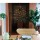
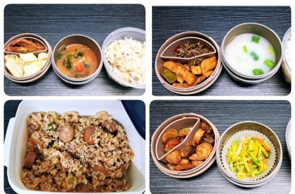
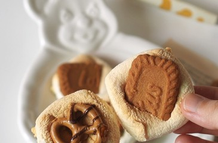
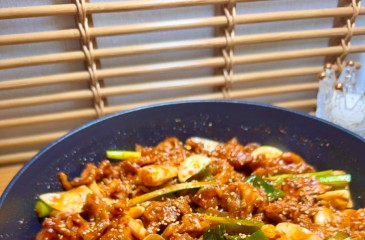
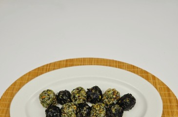
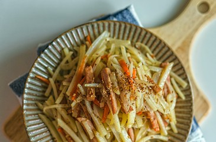
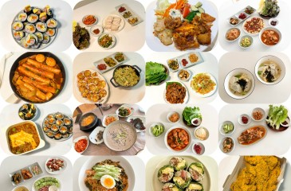
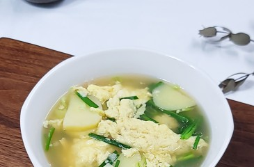
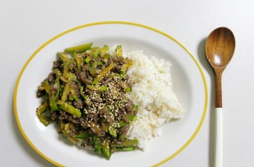
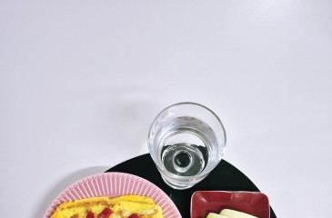

언론사 더보기2페이지전체/4
테마별 레시피
- 이미지 준비중#직장인도시락직장인 점심도시락메뉴 일주일 샐러드 다이어트식단 간단한 도시락만들기윌리쥴리맘
- 이미지 준비중#꽈리고추무침꽈리고추찜 레시피 꽈리고추 무침 요리 가정식 반찬거리
레즐리
- 이미지 준비중#아침밥버터 간장계란밥 레시피 계란밥 아침밥
레지나
- 이미지 준비중#스팸감자채볶음감자채볶음 만들기 레시피 스팸 감자볶음 만드는 법
- 이미지 준비중#꽈리고추무침꽈리고추찜 레시피 양념 꽈리고추 무침 요리 만드는 법
봉스
- 이미지 준비중#간단한도시락삼각김밥으로 간단한 도시락 만들기, 간단김밥으로 추천안녕하다
- 이미지 준비중#홈베이킹땅콩버터 요리 땅콩크림빵 만들기 초보 홈베이킹뚜루
- #직장인도시락직장인남편 점심도시락 만들기 127주차 기록남기기하니맘
- #홈베이킹스모어크래커 만들기ㅣS'more cracker recipeㅣ홈베이킹효니
- #편스토랑레시피간단 제육볶음 편스토랑 김강우제육볶음 레시피 앞다리살 양념심플민
- #아침밥간단한 아침밥 김가루 주먹밥 레시피 만들기 찬밥 요리숲 집밥
- #원팬토스트간단 토스트 레시피 식빵 계란토스트 원팬으로 간단하게!이미지 준비중리베
- #스팸감자채볶음감자채볶음 입맛 살리는 스팸감자채볶음 만드는 법! 간단한 밑반찬 만들기이미지 준비중미소순이
- #저녁밥상여름방학 주간밥상 일주일 저녁밥상 집밥메뉴 추천 오늘뭐먹지이미지 준비중윤줌마
- #원팬토스트원팬 토스트 만들기 통밀 또띠아 다이어트 양배추 요리이미지 준비중꼬마츄츄
- #아침밥전자레인지 계란밥 레시피 간장계란밥 간단한아침메뉴이미지 준비중뽕림이
- #간단한아침국코인육수 계란국 끓이는법 간단한 아침국 감자계란국 레시피이미지 준비중맛있는 찰나
- #원팬토스트길거리토스트 만들기 레시피 식빵 계란토스트 원팬 햄치즈 토스트
라임샴푸
- #초간단요리애호박소고기볶음레시피 애호박덮밥 초간단요리이미지 준비중험나니
- #다이어트계란요리간단한 아침메뉴 빵없는 계란토스트 다이어트 계란요리이미지 준비중제인JANE